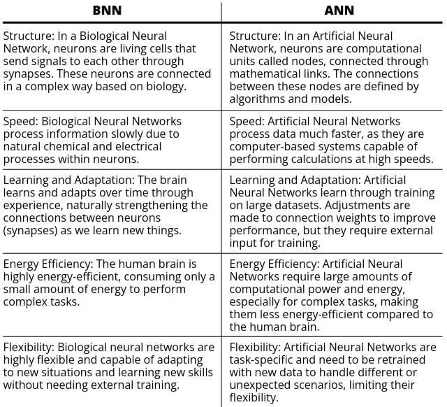

Before diving into soft computing, it's essential to first understand what computing is and familiarize ourselves with the core terminologies related to computing.
Soft computing is essential because many real-world problems are too complex for traditional computing methods. Systems must handle:
Soft computing techniques are applied in a variety of fields, including:
Artificial Neural Networks (ANNs) are a key component of modern artificial intelligence, inspired by the way biological neural networks in the human brain function. ANNs are designed to mimic the brain's ability to process information, learn from data, and make decisions. This section explores the fundamentals of ANNs, starting with an understanding of biological neural networks, which serve as the foundation for developing these sophisticated computational models. By examining how neurons interact in the human brain, we can better appreciate how artificial networks are structured and how they perform various tasks.
Artificial Neural Networks (ANNs) and Biological Neural Networks (BNNs) are both networks of neurons, but they function differently. While BNNs exist naturally in the human brain, ANNs are man-made systems created to mimic the brain's functioning. In this section, we’ll explore the key differences between these two types of neural networks.
To understand Artificial Neural Networks (ANN), we must first examine its foundational components. Just like any structure, a neural network is built upon certain key elements that define how it processes information, learns from data, and makes predictions.
Architecture refers to the layout or structure of an ANN. It is how the neurons (units) are organized in layers and how these layers are connected to each other.
Input Layer Hidden Layer Output Layer
(3 nodes) (4 nodes) (2 nodes)
o o o
| \ / | \ / |
| \ / | \ / |
o---o----------o---o---o------------o o
| / \ / \ | / \ / |
| / \ / \ | / \ / |
o \ / o \ / o
\ / \ /
o------------------o--o
The Input Layer has 3 nodes representing features (inputs).
The Hidden Layer has 4 nodes where computations happen.
The Output Layer has 2 nodes representing the final outputs or predictions.
The architecture of a neural network defines how data flows through the network, from input to output, and how decisions are made at each step.
Weights are numerical values that control how much influence one neuron has over another. Every connection between neurons has a weight associated with it, and these weights are learned during the training process.
Connection with Activation Functions: Once the weights determine how much influence one neuron’s output has, we need a mechanism to decide whether this output should be passed forward or "activated." That’s where activation functions come in.
An activation function is a mathematical function that determines whether a neuron should be activated (fired) based on the weighted sum of its inputs. It introduces non-linearity to the network, allowing it to solve complex problems.
Now we will discuss each of the activation functions one by one:
1: Identity Function
2: Binary Step Function
3: Bipolar Step Function
4: Sigmoidal Activation Functions
Sigmoidal functions introduce non-linearity to the network and are widely used in backpropagation-based neural networks. There are two main types:
a) Binary Sigmoidal Function (Logistic Function)
b) Bipolar Sigmoidal Function
5: Ramp Activation Function
Activation functions play a vital role in artificial neural networks by introducing non-linearity and helping the network learn complex patterns.
In this case, we have a neural network with an input layer and an output layer. The input layer has three neurons, and the output layer has one neuron. The inputs are \(0.8\), \(0.6\), and \(0.4\). The bias weight is \(0.35\). The weights associated with the three neurons are \(0.1\), \(0.3\), and \(-0.2\).
There are two types of sigmoid functions:
To calculate the net input \(y_n\), we find the sum of the product of the inputs and weights. The equation looks like this:
\(y_n = B + \sum_{i=1}^{n} (x_i \cdot w_i)\)In this case, \(n\) is the number of input neurons, which is 3.
Expanding the equation:
\(y_n = B + (x_1 \cdot w_1) + (x_2 \cdot w_2) + (x_3 \cdot w_3)\)Substituting the values:
Now solving the equation:
\(y_n = 0.35 + (0.8 \cdot 0.1) + (0.6 \cdot 0.3) + (0.4 \cdot -0.2)\)After calculation, we get \(y_n = 0.53\) as the net input to the neuron.
Now we can use this net input to find the outputs:
The McCulloch-Pitts (MP) neuron, introduced in 1943 by Warren McCulloch and Walter Pitts, is one of the earliest models of artificial neural networks. This pioneering work laid the foundation for the field of neural computing and artificial intelligence. The MP neuron was designed to mimic the functioning of biological neurons in the human brain, aiming to represent logical operations in a simplified manner. Unlike more complex models, the MP neuron operates based on binary inputs and outputs, effectively simulating the way neurons fire in response to stimuli. As such, it serves as a fundamental building block in understanding neural networks and provides insights into how information processing occurs within more sophisticated models. This model is crucial for grasping essential concepts in neural networks, including activation functions, thresholds, and the basic principles of learning.
The architecture of the MP neuron consists of two layers:
The input layer neurons are connected to the output neuron through directed edges, which can have either positive or negative weights. Positive weights are associated with excitatory nodes, while negative weights are associated with inhibitory nodes.
The firing of the output neuron depends on a threshold value. The activation function of this network can be defined as follows:
Let \(F(y_n)\) be the activation function, where \(y_n\) is the net input. The function can be expressed as:
\(F(y_n) = \begin{cases} 1 & \text{if } y_n \geq θ \\ 0 & \text{otherwise} \end{cases}\)
Here, θ is the threshold value. For the neuron to fire, the net input \(y_n\) must be greater than or equal to the threshold value.
The value of θ should be greater than \(n \cdot W - P\), where:
1. Truth Table of AND Function
The truth table for the AND function clearly illustrates the relationship between the inputs and the output. In the context of logic gates, an AND gate outputs a high signal (1) only when all its inputs are high. This behavior is fundamental in digital electronics and can be represented as follows:
+---------+---------+--------+
| Input X1| Input X2| Output |
+---------+---------+--------+
| 0 | 0 | 0 |
| 0 | 1 | 0 |
| 1 | 0 | 0 |
| 1 | 1 | 1 |
+---------+---------+--------+
From the truth table, it is evident that the output is high only when both inputs are high (1). If either input is low (0), the output is also low (0). This binary relationship forms the basis of how the McCulloch-Pitts neuron will function in this scenario.
2. Understanding Weights and Threshold
One crucial aspect to note is that the McCulloch-Pitts neuron does not utilize a built-in training algorithm like modern neural networks. Instead, we must manually analyze the input combinations to determine the optimal weights and threshold values required for the desired output behavior.
For implementing the AND function, we can assume the following weights for our inputs:
These weights represent the contribution of each input to the net input of the neuron. With these assumptions in place, we can now calculate the net input at the output neuron based on various input combinations:
Net Input Calculations
Let’s compute the net input \(y_n\) for each possible combination of inputs:
1. For inputs \(X_1 = 1\) and \(X_2 = 1\):
\(y_n = (X_1 \cdot W_1) + (X_2 \cdot W_2) = (1 \cdot 1) + (1 \cdot 1) = 2\)
In this scenario, both inputs are high, resulting in a net input of 2.
2. For inputs \(X_1 = 1\) and \(X_2 = 0\):
\(y_n = (1 \cdot 1) + (0 \cdot 1) = 1\)
Here, the first input is high while the second is low, yielding a net input of 1.
3. For inputs \(X_1 = 0\) and \(X_2 = 1\):
\(y_n = (0 \cdot 1) + (1 \cdot 1) = 1\)
Similar to the previous case, only one input is high, resulting in a net input of 1.
4. For inputs \(X_1 = 0\) and \(X_2 = 0\):
\(y_n = (0 \cdot 1) + (0 \cdot 1) = 0\)
Both inputs being low produces a net input of 0, indicating that the neuron does not fire.
3. Determining the Threshold Value
To ensure that the McCulloch-Pitts neuron fires (outputs 1) only when both inputs are high (1), we need to establish an appropriate threshold value, denoted as \(\theta\). Based on our previous calculations, we can conclude:
Thus, we determine that the threshold value \(\theta\) should be set to 2 to achieve the desired behavior of the AND function.
Additionally, we can calculate the threshold value using the following equation:
\(\theta \geq n \cdot W - P\)
Where:
Substituting these values into the equation gives:
\(\theta \geq 2 \cdot 1 - 0 = 2\)
Thus, both methods confirm that the threshold value should be set to 2.
4. Final Activation Function
The final activation function for the McCulloch-Pitts neuron can be expressed mathematically as:
\(F(y_n) = \begin{cases} 1 & \text{if } y_n \geq 2 \\ 0 & \text{otherwise} \end{cases}\)
This function confirms that the neuron will fire (output 1) only when both inputs \(X_1\) and \(X_2\) are equal to 1, effectively implementing the AND logical function. The simplicity of the McCulloch-Pitts model highlights its significance as a foundational concept in neural network theory, paving the way for more complex learning algorithms and structures in modern artificial intelligence.
1. Truth Table of XOR Function
The truth table for the XOR function demonstrates how the outputs are determined based on the inputs. In this case, we have two inputs: \(X_1\) and \(X_2\), and \(Y\) is the output. The XOR function outputs a high signal (1) only when the inputs are different (one high and one low). This behavior can be represented as follows:
+---------+---------+--------+
| Input X1| Input X2| Output |
+---------+---------+--------+
| 0 | 0 | 0 |
| 0 | 1 | 1 |
| 1 | 0 | 1 |
| 1 | 1 | 0 |
+---------+---------+--------+
From the truth table, we observe that the output is high (1) when one of the inputs is high and the other is low, while it is low (0) when both inputs are the same. This binary relationship establishes the foundation for how the McCulloch-Pitts neuron will function for the XOR operation.
2. Understanding Weights and Threshold
It is essential to note that the McCulloch-Pitts neuron does not utilize a built-in training algorithm. Therefore, we need to analyze the input combinations to determine the appropriate weights and threshold values required for the desired output behavior.
For implementing the XOR function, we can assume the following weights for our inputs:
These weights suggest that both inputs contribute positively to the net input, while the bias acts to reduce the output when both inputs are high. With these assumptions, we can calculate the net input at the output neuron based on various input combinations:
Net Input Calculations
Let’s compute the net input \(y_n\) for each possible combination of inputs:
1. For inputs \(X_1 = 0\) and \(X_2 = 0\):
\(y_n = (X_1 \cdot W_1) + (X_2 \cdot W_2) + W_3 = (0 \cdot 1) + (0 \cdot 1) + (-2) = -2\)
In this scenario, both inputs are low, resulting in a net input of -2.
2. For inputs \(X_1 = 0\) and \(X_2 = 1\):
\(y_n = (0 \cdot 1) + (1 \cdot 1) + (-2) = -1\)
Here, the second input is high while the first is low, yielding a net input of -1.
3. For inputs \(X_1 = 1\) and \(X_2 = 0\):
\(y_n = (1 \cdot 1) + (0 \cdot 1) + (-2) = -1\)
In this case, the first input is high while the second is low, resulting in a net input of -1.
4. For inputs \(X_1 = 1\) and \(X_2 = 1\):
\(y_n = (1 \cdot 1) + (1 \cdot 1) + (-2) = 0\)
Both inputs being high produces a net input of 0, indicating that the neuron does not fire.
3. Determining the Threshold Value
To ensure that the McCulloch-Pitts neuron fires (outputs 1) only when the inputs are different, we need to establish an appropriate threshold value, denoted as \(\theta\). Based on our previous calculations, we can conclude:
Thus, we determine that the threshold value \(\theta\) should be set to 0 to achieve the desired behavior of the XOR function.
Additionally, we can calculate the threshold value using the following equation:
\(\theta \geq n \cdot W - P\)
Where:
Substituting these values into the equation gives:
\(\theta \geq 2 \cdot 1 - 2 = 0\)
Thus, both methods confirm that the threshold value should be set to 0.
4. Final Activation Function
The final activation function for the McCulloch-Pitts neuron can be expressed mathematically as:
\(F(y_n) = \begin{cases} 1 & \text{if } y_n \geq 0 \\ 0 & \text{otherwise} \end{cases}\)
This function confirms that the neuron will fire (output 1) only when the inputs differ, effectively implementing the XOR logical function. The XOR function serves as a critical example in neural network theory, showcasing the limitations of simple models and paving the way for more advanced learning algorithms and structures in artificial intelligence.
1. Introduction to Hebbian Rule
The Hebbian Rule is one of the simplest learning rules under artificial neural networks. It was introduced in 1949 by Donald Hebb. According to Hebb, learning in the brain occurs due to changes in the synaptic gap, which can be attributed to metabolic changes or growth. This rule is based on the biological processes that occur in the brain during learning.
To understand the Hebbian Rule, let’s first consider the structure of a biological neuron. Each neuron has three main parts:
The electrical impulses are passed from one neuron to another through synapses, which are small gaps between neurons. When learning occurs, metabolic changes happen in the synaptic gap, leading to the formation of new connections between neurons.
2. Hebbian Rule Definition
Donald Hebb's definition of the Hebbian Rule is as follows:
"When an axon of cell A is near enough to excite cell B and repeatedly or persistently fires it, some growth process or metabolic change takes place in one or both cells."
In simpler terms, if neuron A excites neuron B frequently, changes occur in their synaptic gap, which strengthens the connection between the two neurons.
Hebb's Rule was inspired by the way learning happens in the human brain. A relatable example of this can be seen when learning to drive. Initially, when you start driving, you are conscious of every action, like turning or reversing. However, over time, as it becomes a habit, you can drive effortlessly while doing other tasks, like listening to music. This example demonstrates how neurons become trained and perform tasks automatically over time, which is the core idea of Hebb’s learning theory.
3. Principles of Hebbian Rule
The Hebbian Rule follows two basic principles:
4. Hebbian Rule Formula
According to Hebb's learning rule, when two interconnected neurons are activated simultaneously, the weights between them increase. The change in weight is represented by the following formula:
Wnew = Wold + ΔW
ΔW = xi * y
Where:
This formula shows that changes in the synaptic gap lead to changes in the weights, allowing the neuron network to learn and adjust over time.
5. Flowchart of Hebbian Network
The flowchart of Hebbian learning involves several key steps:
This flowchart represents how the Hebbian Network processes input and output pairs and adjusts weights based on learning.
6. Training Algorithm for Hebbian Network
The training algorithm for the Hebbian Network follows these steps:
Wnew = Wold + xi * y
Bnew = Bold + y
This training algorithm allows the Hebbian Network to learn and update its weights and bias, forming the basis for unsupervised learning in neural networks.
7. Applications of Hebbian Rule
The Hebbian learning rule is widely used in various applications, including:
In conclusion, Hebb's rule and network play a foundational role in understanding how neurons learn and adapt. The rule is simple yet powerful, forming the basis for more complex neural network models in artificial intelligence.
We are tasked with designing a Hebbian network to implement the logical AND function using bipolar inputs (1 or -1) and targets. The truth table for the AND function is as follows:
Truth Table
Inputs (X1, X2) and Target (Y)
+----+----+----+
| X1 | X2 | Y |
+----+----+----+
| 1 | 1 | 1 |
| 1 | -1 | -1 |
| -1 | 1 | -1 |
| -1 | -1 | -1 |
+----+----+----+
We will initialize the weights (W1, W2) and bias (B) to zero and use the Hebbian learning rule to update the weights based on the input-output pairs.
Weight Update Rule
The weight and bias update rules in Hebbian learning are as follows:
W1(new) = W1(old) + X1 * Y
W2(new) = W2(old) + X2 * Y
B(new) = B(old) + Y
Step-by-Step Calculation
Initial Weights: W1 = 0, W2 = 0, B = 0
+----+----+----+----+-----+-----+-----+-----+-----+-----+-----+-----+
| X1 | X2 | Y | B | W1 | W2 | ΔW1 | ΔW2 | ΔB | W1 | w2 | B |
| | | | | old | old | | | | new | new | new |
+----+----+----+----+-----+-----+-----+-----+-----+-----+-----+-----+
| 1 | 1 | 1 | 1 | 0 | 0 | 1 | 1 | 1 | 1 | 1 | 1 |
| 1 | -1 | -1 | 1 | 1 | 1 | -1 | 1 | -1 | 0 | 2 | 0 |
| -1 | 1 | -1 | 1 | 0 | 2 | 1 | -1 | -1 | 1 | 1 | -1 |
| -1 | -1 | -1 | 1 | 1 | 1 | 1 | 1 | -1 | 2 | 2 | -2 |
+----+----+----+----+-----+-----+-----+-----+-----+-----+-----+-----+
Final Weights: W1 = 2, W2 = 2, B = -2
Final Solution Check
Now, we check whether the final weights produce the correct output for the AND function. The formula is:
Y = B + X1 * W1 + X2 * W2
Substituting the final weights for the first set of inputs (X1 = 1, X2 = 1):
Y = -2 + 1 * 2 + 1 * 2 = -2 + 2 + 2 = 2 (positive value, correct output)
Since we get the correct output for the AND function, the final weights are correct.
This approach can be applied to other logical functions such as OR, NOT, NAND, etc., by adjusting the truth table and applying the Hebbian learning process.
The Perceptron Learning Rule is an algorithm used to train a single-layer perceptron. The perceptron is a simple binary classifier that decides the output based on the weighted sum of the inputs and a bias, followed by an activation function. The learning rule adjusts the weights and bias to reduce classification errors.
The step function is used to decide the perceptron's output based on the net input:
Mathematically:
\(
f(y_{\text{input}}) =
\begin{cases}
1 & \text{if } y_{\text{input}} \geq 0 \\
-1 & \text{if } y_{\text{input}} < 0 \end{cases} \)
During training, the perceptron's weights and bias are updated based on the difference between
the target output and the perceptron’s predicted output. The update rules are:
\(
\Delta W_i = \alpha \cdot (T - y) \cdot x_i
\)
\(
\Delta B = \alpha \cdot (T - y)
\)
Perceptron Neural Network is a foundational model in the field of Artificial Neural Networks (ANNs), operating under the paradigm of supervised learning. Supervised learning refers to a process where the model is trained using labeled data, meaning both input values and their corresponding target (output) values are provided during training. The Perceptron is widely regarded as one of the simplest forms of neural networks, primarily designed for tasks such as binary classification, where it can classify input data into two distinct categories. Despite its simplicity, the Perceptron plays a crucial role as a building block in the development of more advanced neural networks, serving as an early stepping stone in the evolution of machine learning models.
The architecture consists of four main components:
The perceptron operates by comparing the output of the activation function with the target output. If there is a mismatch, the network adjusts the weights and repeats the process until the error is minimized or eliminated.
The general formula to calculate the output (Y) is:
Y = f(X1 * W1 + X2 * W2 + ... + Xm * Wm + B)
Where f is the activation function. In the step activation function:
\(
f(y) =
\begin{cases}
1 & \text{if } y > \text{threshold} \\
0 & \text{if } -\text{threshold} \leq y \leq +\text{threshold} \\
-1 & \text{if } y < -\text{threshold} \end{cases} \)
When an error occurs, the weights are updated using the formula:
New Weight = Old Weight + Alpha * T * X
Where:
The training algorithm follows these steps:
The flowchart of the perceptron training process involves:
After training, the network is tested using the following steps:
Step 1: Initialize Weights and Bias
Weights (W1, W2) = 0
Bias (B) = 0
Step 2: Calculate Net Input (y_input)
y_input = B + Σ(x_i * W_i)
Apply activation function:
\( f(y\_input) =
\begin{cases}
1 & \text{if } y\_input > 0 \\
0 & \text{if } y\_input = 0 \\
-1 & \text{if } y\_input < 0 \end{cases} \)
Step 3: Update Weights and Bias
If y ≠ target, update weights and bias using the formula:
ΔW_i = α * T * x_i (α = 1)
ΔB = α * T
New weights = old weights + ΔW_i
New bias = old bias + ΔB
Truth Table for AND Function
+----+----+--------+
| X1 | X2 | Target |
+----+----+--------+
| 1 | 1 | 1 |
| 1 | -1 | -1 |
| -1 | 1 | -1 |
| -1 | -1 | -1 |
+----+----+--------+
First Approach
+----+----+-------+--------+---------+-----+-----+-----+-----+-----+-----+-----+
| X1 | X2 | b | Target | y_input | y | ΔW1 | ΔW2 | ΔB | W1 | W2 | B |
| | | input | | | | | | | new | new | new |
+----+----+-------+--------+---------+-----+-----+-----+-----+-----+-----+-----+
| 1 | 1 | 1 | 1 | 0 | 0 | 1 | 1 | 1 | 1 | 1 | 1 |
| 1 | -1 | 1 | -1 | 1 | 1 | -1 | 1 | -1 | 0 | 2 | 0 |
| -1 | 1 | 1 | -1 | 2 | 1 | 1 | -1 | -1 | 1 | 1 | -1 |
| -1 | -1 | 1 | -1 | -3 | -1 | 0 | 0 | 0 | 1 | 1 | -1 |
+----+----+-------+--------+---------+-----+-----+-----+-----+-----+-----+-----+
Final Weights: W1 = 1, W2 = 1, B = -1
Second Approach
+----+----+-------+--------+---------+-----+-----+-----+-----+-----+-----+-----+
| X1 | X2 | b | Target | y_input | y | ΔW1 | ΔW2 | ΔB | W1 | W2 | B |
| | | input | | | | | | | new | new | new |
+----+----+-------+--------+---------+-----+-----+-----+-----+-----+-----+-----+
| 1 | 1 | -1 | 1 | 1 | 1 | 0 | 0 | 0 | 1 | 1 | -1 |
| 1 | -1 | -1 | -1 | -1 | -1 | 0 | 0 | 0 | 1 | 1 | -1 |
| -1 | 1 | -1 | -1 | -1 | -1 | 0 | 0 | 0 | 1 | 1 | -1 |
| -1 | -1 | -1 | -1 | -3 | -1 | 0 | 0 | 0 | 1 | 1 | -1 |
+----+----+-------+--------+---------+-----+-----+-----+-----+-----+-----+-----+
Final Weights: W1 = 1, W2 = 1, B = -1
Final Weights
W1 = 1
W2 = 1
B = -1
Verification
For input (1, 1), y_input = 1, y = 1 (correct)
For input (1, -1), y_input = -1, y = -1 (correct)
For input (-1, 1), y_input = -1, y = -1 (correct)
For input (-1, -1), y_input = -3, y = -1 (correct)